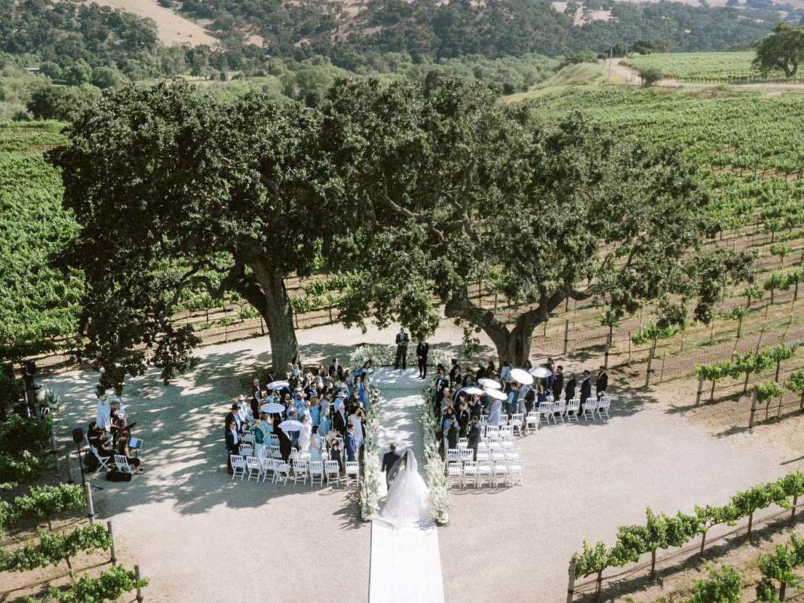
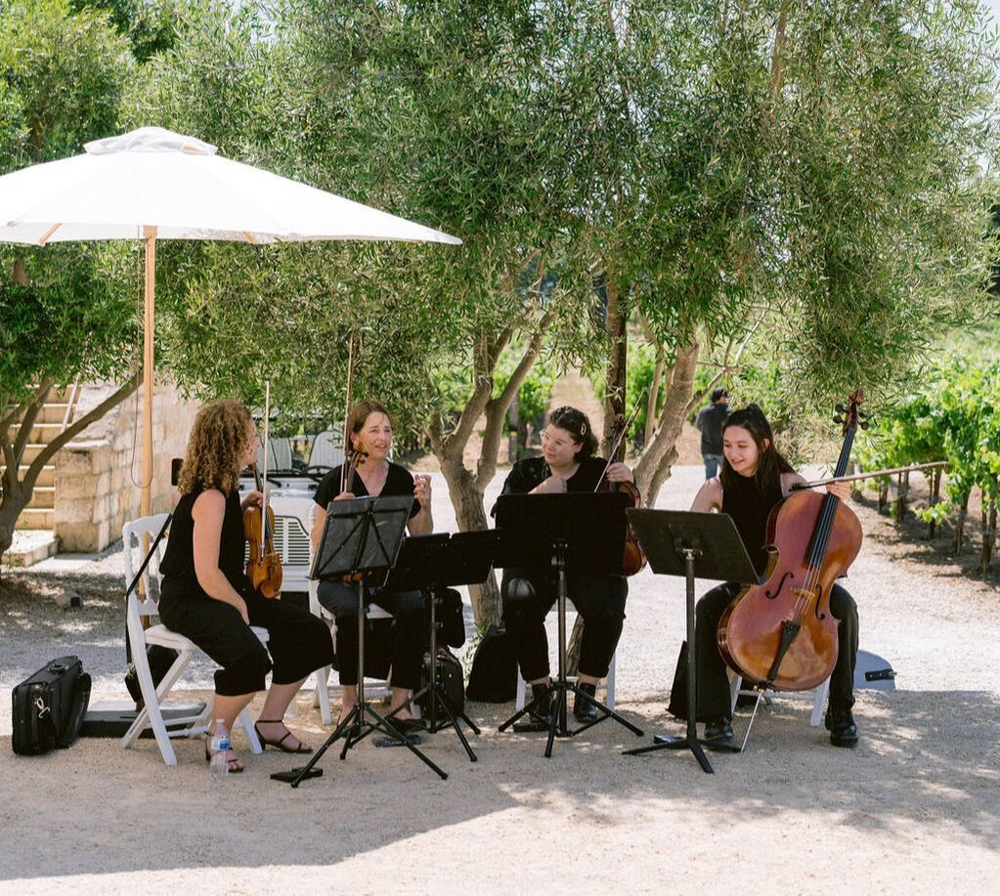
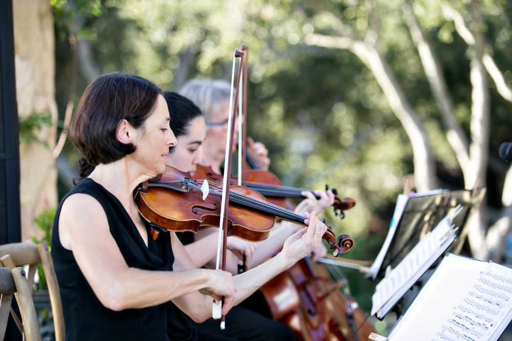
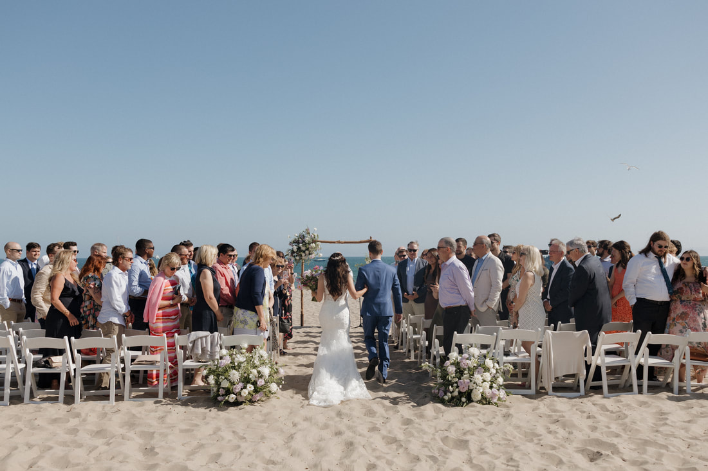
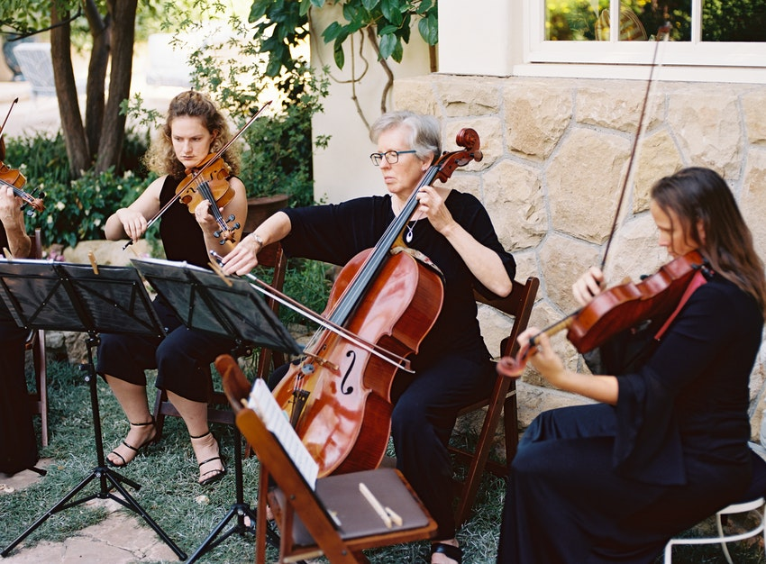
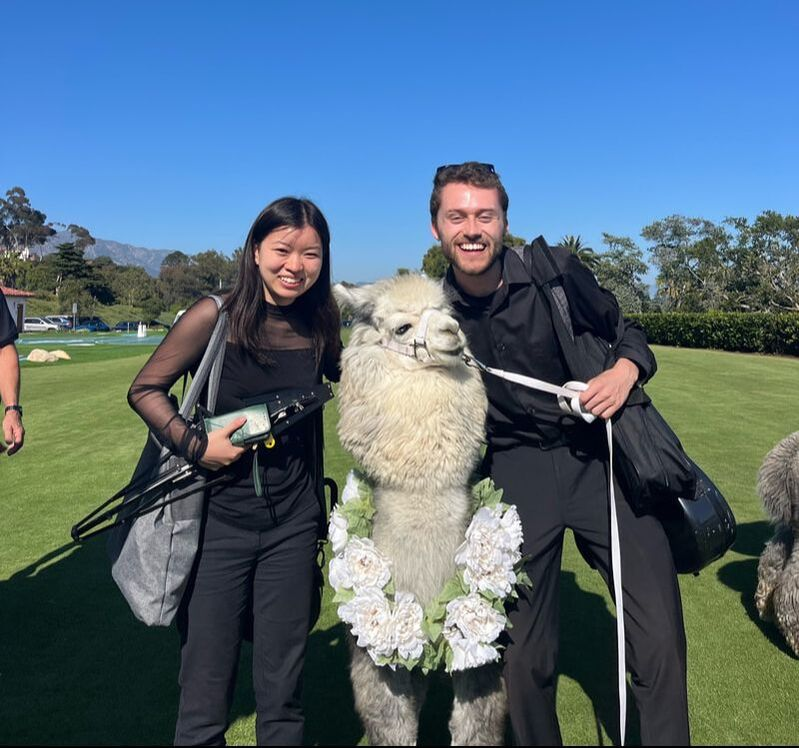

String Quartet
Two violins, viola and cello. Our richest and most cinematic sound — ideal for ceremony, cocktail hour and elegant receptions.
Request a quoteSanta Barbara's premier string ensemble for weddings and private events — refined, personal, and effortless from the first note to the last.



The Santa Barbara String Quartet has provided live music for thousands of couples over the past 30 years. Our repertoire spans traditional wedding music, classical favorites and contemporary covers, and we are happy to fulfill special requests so your music feels personal to your celebration.
Choose the full quartet or a more intimate trio, duo or soloist. We can shape the ensemble around your venue, guest count, musical vision and the atmosphere you want to create.
Meet the musiciansFrom an intimate garden ceremony to a full-scale coastal wedding, we can tailor the size and sound of the ensemble to the moment.
Two violins, viola and cello. Our richest and most cinematic sound — ideal for ceremony, cocktail hour and elegant receptions.
Request a quoteViolin, viola and cello. A warm, full texture with a slightly lighter footprint for gardens, courtyards and intimate venues.
Request a quoteViolin and cello. Elegant, flexible and beautifully suited to smaller ceremonies, proposals and cocktail settings.
Request a quoteViolin or cello. A simple, expressive choice for elopements, proposals, private dinners and meaningful moments.
Request a quoteWe can perform throughout your celebration and coordinate with your planner or venue team so musical transitions feel natural and polished.

The trio was better than I could ever imagine. It was so beautiful and dramatic and exactly what I wanted.— Alison, SBSQ client
Our musicians have performed celebrations across the coast, wine country, gardens, historic courtyards and destination venues throughout the region.




Tell us your date, venue and the kind of atmosphere you have in mind. We'll help you choose the right ensemble and music for the day.